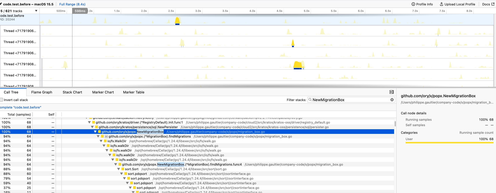

Philippe Gaultier
Philippe Gaultier
Philippe Gaultier
Philippe Gaultier
Published on 2025-07-01
Today at work, I was hacking on Kratos (a Go application), and I noticed running the tests took a bit too long to my liking. So I profiled the tests, and unknowingly embarked on a fun optimization and debugging adventure. I thought it could be interesting and perhaps educational. I just started this job not two months ago. I want to show methods that make it feasible to understand and diagnose a big body of software you don't know.
If you want you can jump to the PR directly.
The nice thing when you work on an open-source project for work is that it's easy to write blog posts about it, and it's easy for readers to reproduce it! And when I'm done, it benefits the community. I like it.
Anyways, the nice thing about Kratos is that it supports many databases (which absolutely does not make my life hard at all when making a schema change :) ), and we can simply use sqlite when running tests locally. SQLite is simple and great. We can even use a in-memory SQLite for tests for speed. Cool. Each schema change is done with a SQL migration file, like add_some_column.up.sql and its counterpart add_some_column.down.sql.
Since each test is independent, each test collects all migrations and applies them, before doing its thing.
Now, there are a number of things we could do to speed things up, like only collect migrations once at startup, or merge them all in one (i.e. a snapshot). But that's how things are right now. And there are 10 years worth of SQL migrations piled up in the project.
When I profile the test suite, I notice some weird things:

findMigrations whereas the rest of the profile is pretty uneventful.findMigration is spenting sorting. Perhaps it could be fine, but still surprising and worth investigating.The CPU profile unfortunately does not show how much time is spent exactly in findMigrations. At this point, I also do not know how many SQL files are present. If there are indeed a bazillion SQL migrations, maybe it's expected that sorting them indeed takes the most time.
Let's first find out with dtrace how long the function runs. We'd like to dynamically trace findMigrations, but the Go compiler actually inlined it. We can see it on the profile, it's mark inl for inline. The profiler is clever enough to inspect the debug information and reconstruct this information. But dtrace inserts tracing code at runtime at the entry of the function - if it does not exist it's not feasible. So we trace the next best thing which is the caller of findMigrations: NewMigrationBox.
Let's first check it is visible to dtrace by listing (-l) all probes matching the pattern *ory* in the executable code.test.before (i.e. before the fix):
$ sudo dtrace -n 'pid$target:code.test.before:*ory*: ' -c ./code.test.before -l | grep NewMigrationBox
209591 pid47446 code.test.before github.com/ory/x/popx.NewMigrationBox return
209592 pid47446 code.test.before github.com/ory/x/popx.NewMigrationBox entry
209593 pid47446 code.test.before github.com/ory/x/popx.NewMigrationBox.(*MigrationBox).findMigrations.func4 return
209594 pid47446 code.test.before github.com/ory/x/popx.NewMigrationBox.(*MigrationBox).findMigrations.func4 entry
[...]
Ok, the first two are the ones we need. Let's time the function duration then with a D script time.d:
pid$target::*popx?NewMigrationBox:entry { self->t=timestamp }
pid$target::*popx?NewMigrationBox:return {
printf("NewMigrationBox:%d\n", (timestamp - self->t)/1000000)
}
Explanation: timestamp is an automatically defined variable that stores the current monotonic time at the nanosecond granularity. When we enter the function, we read the current timestamp and store it in a thread-local variable t (with the self->t syntax). When we exit the function, we do the same again, compute the difference in terms of milliseconds, and print that.
Since the tests log verbose stuff by default and I do not know how to silence them, I save the output of dtrace in a separate file /tmp/time.txt: dtrace -s time.d -c ./code.test.before -o /tmp/time.txt
We see these results (excerpt):
13 4446 github.com/ory/x/popx.NewMigrationBox:return NewMigrationBox:180
10 4446 github.com/ory/x/popx.NewMigrationBox:return NewMigrationBox:180
4 4446 github.com/ory/x/popx.NewMigrationBox:return NewMigrationBox:179
13 4446 github.com/ory/x/popx.NewMigrationBox:return NewMigrationBox:179
There are some outlier numbers, but I believe this is due to the
M:Nconcurrency model of Go, where a function can start on one OS thread, but during its executation, yield back to the Go runtime due to doing I/O or such, and then be continued later, potentially on a different OS thread. Thus, our use of a thread-local variable is not strictly correct (but good enough). To be perfectly correct, we would need to also track with Dtrace the Go scheduler actions. Which is also possible but complicates the script.
Dtrace can also compute histograms which is typically a better approach when inspecting the runtime of something, for example the duration of a HTTP request, but here this is enough for us.
When doing some (light) optimization work, it is crucial to establish a baseline. What is the ideal time? How much do we differ from this time? And to establish this baseline, it is very important to understand what kind of work we are doing:
syscall::open:entry {
filename = copyinstr(arg0);
if (rindex(filename, ".sql") == strlen(filename)-4) {
printf("%s\n", filename)
}
}
When we run this script on go test -c which builds the text executable, we see that all the SQL files are being opened by the Go compiler and subsequently embedded in the test binary:
$ sudo dtrace -s ~/scratch/popx_opens.dtrace -c 'go test -tags=sqlite -c'
CPU ID FUNCTION:NAME
10 178 open:entry /Users/philippe.gaultier/company-code/x/networkx/migrations/sql/20150100000001000000_networks.cockroach.down.sql
5 178 open:entry /Users/philippe.gaultier/company-code/x/networkx/migrations/sql/20150100000001000000_networks.postgres.down.sql
[...]
So... By comparison, a simple find . -name '*.sql' takes ~200ms. How come doing something purely in memory takes as much time (180 ms) as doing it with disk I/O?
If you enjoy what you're reading, you want to support me, and can afford it: Support me. That allows me to write more cool articles!
This blog is open-source! If you find a problem, please open a Github issue. The content of this blog as well as the code snippets are under the BSD-3 License which I also usually use for all my personal projects. It's basically free for every use but you have to mention me as the original author.